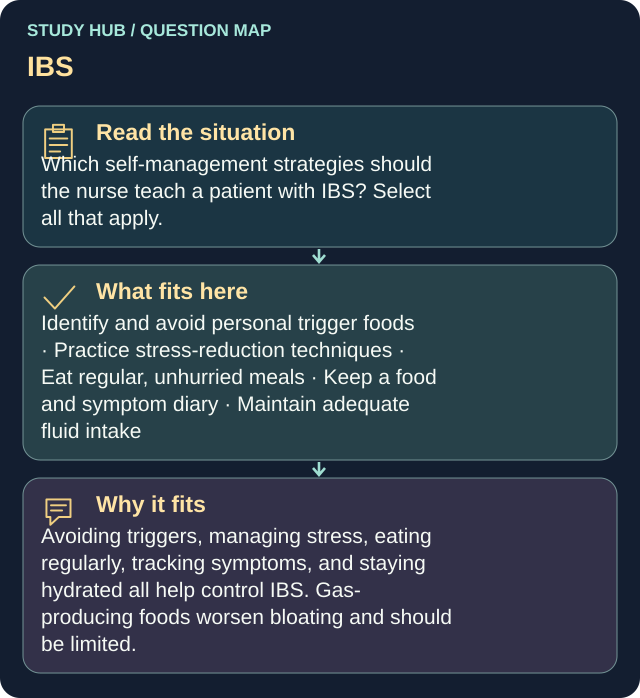

Which self-management strategies should the nurse teach a patient with IBS? Select all that apply.
Answers
- Identify and avoid personal trigger foods
- Practice stress-reduction techniques
- Eat regular, unhurried meals
- Keep a food and symptom diary
- Maintain adequate fluid intake
Reasoning
Avoiding triggers, managing stress, eating regularly, tracking symptoms, and staying hydrated all help control IBS.
Clinical detail
Gas-producing foods worsen bloating and should be limited.
Why the other answers do not fit
- Increase intake of gas-producing foods
Gas-producing foods worsen bloating and should be limited.
